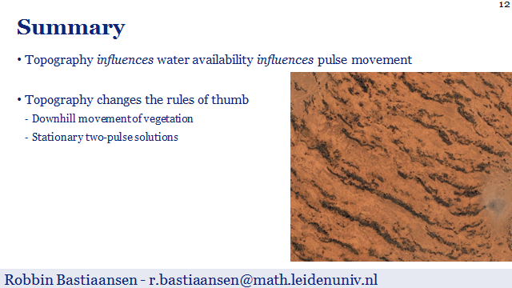

Climate sensitivity estimation using linear system fit: extending the Gregory method
TiPES webinar
Abstract
One of the most used metrics to track the effects of climate change is the equilibrium climate sensitivity, formally defined as the long-term (equilibrium) temperature increase that results from an instantaneous doubling of atmospheric CO2. Since global climate models cannot be fully equilibrated, predictive techniques have been developed that estimate the equilibrium state from transient warming simulations. Because of the abundance of climate feedbacks -- that span a wide range of spatial and temporal scales -- it is hard to predict long-term behaviour from short time series; many of the predominantly used techniques, including the often used technique by Gregory et al (2004), are only capable of detecting the most dominant feedback, thus hampering their ability to give accurate long-term predictions. In this presentation, I will present work-in-progress on an extension to the "Gregory method", in which data from additional observables (i.e. effective global albedo and emissivity) is used to fit a linear (multi-component) system. This way, not only the dominant but also the next dominant dynamics of the climate system can be captured, which can lead to better predictions for the equilibrium climate sensitivity from shorter time series.

Abstract
De aarde warmt op; vanaf de industrialisatie is de gemiddelde temperatuur op aarde toegenomen (met een tempo dat erg snel is voor klimatologische begrippen) en is er sprake van klimaatverandering. Over de gevolgen hiervan wordt al meer dan een eeuw gespeculeerd en deze worden met het jaar concreter. Een aantal voorbeelden uit 2019: extreme droogte, extreme neerslag met overstromingen, toename in hoeveelheid en intensiteit van bosbranden, smeltende ijskappen, en heftigere stormen. Om deze negatieve gevolgen te beperken zijn er internationaal afspraken gemaakt om de opwarming van de aarde te beteugelen. Centraal staat hierin de doelstelling om deze opwarming te beperken tot twee graden Celsius (ten opzichte van het pre-industriële tijdperk). Op het moment is het echter nog onzeker of deze afspraken wel genoeg zijn; met andere woorden, misschien is twee graden wel te veel.
Deze onzekerheid komt voort uit de complexiteit van het klimaatsysteem. De gevolgen van klimaatverandering zorgen zelf namelijk weer voor een verdere verandering aan het klimaat. Als bijvoorbeeld het ijs op aarde smelt, zal er minder zonlicht weerkaatst worden en wordt het dus nóg warmer. Meer technisch gesproken: het klimaat is een niet-lineair dynamisch systeem. Tijdens deze voordracht wordt uiteengezet hoe dergelijke systemen wiskundig benaderd worden. In het bijzonder wordt stilgestaan bij het aanwezig zijn van zogenoemde kantelpunten in deze systemen: situaties wanneer een ogenschijnlijk kleine verandering (bijvoorbeeld een paar graden) plots toch drastische effecten heeft op de toestand van het systeem (bijvoorbeeld het klimaat). Aan de hand van een aantal relatief simpele modellen wordt getoond hoe wiskunde centraal staat in het begrijpen van het klimaatsysteem, maar ook waarom het zo moeilijk is om een antwoord te geven op de vraag of twee graden te veel is.

Behaviour of self-organised vegetation patterns in dryland ecosystems
Theoretical Biology, Utrecht University
Behaviour of self-organised vegetation patterns in dryland ecosystems
Amsterdam-Leiden seminar
Abstract
Vast, often populated, areas in dryland ecosystems face the dangers of desertification. Loosely speaking, desertification is the process in which a relatively dry region loses its vegetation - typically as an effect of climate change. As an important step in this process, the lack of resources forces the vegetation to organise itself into large-scale patterns. The behaviour of these patterns can be analysed using (conceptual) reaction-(advection)-diffusion models, in which these patterns present themselves as localized structures (e.g. as pulse solution). In this talk, first I will present the results of a comparison between conceptual model and real vegetation pattern characteristics. Subsequently, I will explain how the found multistability leads to novel adaptation mechanisms, which can be understood via a mathematical analysis of the dynamics of (disappearing) semi-strong interacting pulses in an ecosystem model with parameters that (may) vary in time and space
Multistability of model and real dryland ecosystems through spatial self-organization
Netherlands Cancer Institute (NKI)
Minimizing biomass loss for banded vegetation in dryland ecosystems
Yerseke/Leiden meeting: Emergent patterns – from field to formulae, Leiden
Abstract
Vast, often populated, areas in dryland ecosystems face the dangers of desertification. As an important step in this process, the lack of resources forces the vegetation in these regions to organise itself in large-scale patterns, such as banded vegetation patterns. Under continued drought, more and more vegetation bands will disappear. The central question to answer is how to minimize biomass loss under these worsening climatological circumstances. In this talk, I will give a summary of a recent mathematical study on banded vegetation patterns in a simple dryland ecosystem model that can help to shed light on this issue. Moreover, I present preliminary results of numerical simulations that give insight in several possible vegetation maintenance strategies and their short-term and long-term advantages and disadvantages.
Modelling honey bees in winter
MPE/NL Meeting Fall 2018, Amsterdam
Abstract
Thermoregulation in honey bee colonies during winter is thought to be self-organised. We added mortality of individual bees to an existing model of thermoregulation to account for elevated losses of bees that are reported worldwide. The aim of analysis is to obtain a better fundamental understanding of the consequences of honey bee mortality during winter. This model resembles the well-known Keller-Segel model. In contrast to the often studied Keller-Segel models, our model includes a chemotactic coefficient of which the sign can change as honey bees have a preferred temperature: when the local temperature is too low, they move towards higher temperatures, whereas the opposite is true for too high temperatures. Our study shows that we can distinguish two states of the colony: one in which the colony size is above a certain critical number of bees in which the bees can keep the core temperature of the colony above the threshold temperature, and one in which the core temperature drops below the critical threshold and the mortality of the bees increases dramatically, leading to a sudden death of the colony. This model behaviour may explain the globally observed honey bee colony losses during winter.
Comparison of model and real dryland ecosystems suggests high adaptiveness of vegetation patterns
MPE/NL Meeting Spring 2018, Utrecht
Abstract
Today, an increasing amount of vegetation patterns in semi-arid climates face the dangers of desertification. Since the availability of aerial photography in the 1940s, it is known that vegetation in these regions forms patterns when water becomes more scarce. Many models have been created that try to explain and describe the existence, creation and disappearance of these patterns. However, results of these theoretical studies are rarely compared to reality - and comparisons often only consider the visual appearance. Nowadays, data about wavenumber, biomass and migration speed of vegetation patterns becomes more readily available. Therefore more thorough comparisons are possible only now. In this talk, I show that this new data aligns well with predictions of reaction-advection-diffusion models. Furthermore, I discuss why this suggests that vegetation patterns are more resilient and more adaptive than is often believed.
Wide distribution of regular pattern wavenumbers in model and real dryland ecosystems
Netherlands Annual Ecology Meeting 2018, Lunteren
Abstract
The availability of aerial photography around the 1940s led to the discovery of vegetation patterns in semi-arid climates. Since then many theoretical models have been created to explain and describe these patterns. Studies of these models required the use of advanced mathematics and physics behind fluid dynamics. However, the results of these studies were rarely compared to reality - and comparisons often were only visual. Nowadays, data about vegetation patterns becomes more readily available and thorough comparisons are therefore only now possible. In this talk, the theoretical predictions based on reaction-(advection)-diffusion models will be explained and compared to data of vegetation patterns in Somaliland. The similarities between the two show an important spread in a wavenumbers of these vegetation patterns. Moreover, this observation suggest multistability of vegetation patterns, which indicates that patterns in semi-arid climates might be more resilient than is often believed.

Pulse solutions in an extended-Klausmeier model with spatially varying coefficients
Groups Meeting, Bremen
Introducing Topographical Influences in the Extended-Klausmeier Vegetation Model
2017 SIAM Conference on Dynamical Systems
Abstract
Today, an increasing amount of vegetation patterns in semi-arid climates face the dangers of desertification. To understand the driving mechanics behind this effect many ecosystem models have been created over the last years - both very simplistic ones and very realistic ones. The current consensus indicates the importance of water availability for the survivability (and movement) of vegetation. In turn the water availability is greatly influenced by the topography.
Often, simple models ignore the topographical details whereas advanced models can only be studied by means of numerical PDE simulations. In this talk, we present one way to add topographical effects in a simplified ecosystem model (extended-Klausmeier) that results in a heterogeneous PDE that we can still study analytically for some cases. Specifically we study the topographical effects on localized vegetation pulses, i.e. one-dimensional patches. This leads to new observations, including pulses that move downhill.

Adaptive Semi-Strong Pulse Interactions
NDNS+ PhD-Days 2017
Adaptive Semi-Strong Pulse Interactions
NDNS+ PhD-Days 2016
Adaptive Semi-Strong Pulse Interactions
MPE/NL Intro Meeting
Adaptive Semi-Strong Pulse Interactions
NDNS+ PhD-Days 2015